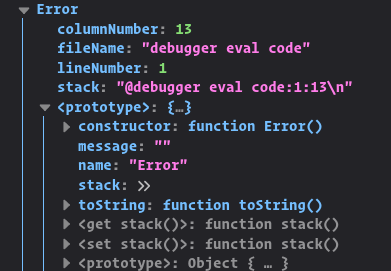

Pour faire la meme chose que precedemment, il est possible de passer directement par le constructeur.
class CustomErrorsConstructor extends Error {
constructor(message) {
super(message);
this.message = message;
}
}
export default CustomErrorsConstructor;
import CustomErrorsConstructor from './modules/CustomErrorsConstructor.js';
// Une erreur s'est produite
const errorMessage = {
error: 'unknown',
message: 'Same player play again',
};
// On passe l'erreur directement au niveau de constructeur,
// La class parente sera instancie avec le message directement.
const customError = new CustomErrors(errorMessage);
// On accede directement a la propriete message.
console.log(customError.message);
On se souvient qu'il y egalement un propriete name a la class native Error:  Modifions notre code:
class CustomErrorsConstructor extends Error {
constructor(message, name) {
// attention le constructeur de la classe Error n'accepte qu'un argument
super(`${message} ${name}`);
this.message = message;
this.name = name;
}
}
export default CustomErrorsConstructor;
Jusqu'a maintenant , on lisait un message tres vague et flou dans la console, avec cette modification on peut lire le nom de l'erreur et la valeur du message quand on console.log l'instance de l'erreur.
import CustomErrorsConstructor from './modules/CustomErrorsConstructor.js';
// Une erreur s'est produite
const errorMessage = {
error: 'unknown',
message: 'Same player play again',
};
// On passe l'erreur directement au niveau de constructeur,
// La class parente sera instancie avec le message directement.
const customError = new CustomErrorsConstructor(
errorMessage.message,
errorMessage.error
);
console.log(customError.name); // Form Error
console.log(customError.message); // Same player play again
console.log('\u{1f609}'); // un emoji pour se detendre
console.log(typeof customError); // object
console.log(customError instanceof Error); // true
// L'instance de notre classe:
console.log(customError); // Form Error: Same player play again
f12